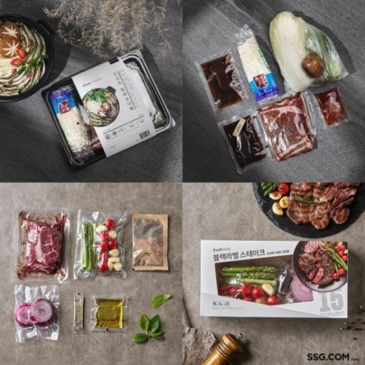

밀키트는 데우기만 하면되는 기존 가정간핀식(HMR)과 달리손질된 재료를 제고되는 레시피를 따라서 소비자가 직접 요리하는 제품입니다.재료가 손질되어 배송되기 때문에 장을 보고 재료를 손질하는 시간이 절약되기때문에 바쁜 현대인들에게 인기있는 제품입니다. 또한 기존 가정간편식들은제품의 질이 떨어진다는 단점이 있지만 밀키트는 유통기한이 짧지만 냉장상태의신선한 재료를 배송하기 때문에 품질이 좋습니다. 최근 코로나사태로 사람들이외부활동을 자제하면서 집에서 간편하게 요리할 수 있는 밀키트시장이 빠르게성장하고 있습니다.
밀키트의 특징 중 하나는 간편식이지만 소비자가 직접 요리를 한다는 것입니다. 요리를 못하는 저도 밀키트를 통해서 밀푀유나베, 양갈비스테이크, 로제파스타 등 어려워 보이는 요리들도 쉽게 할 수 있었습니다. 외식, 배달음식 그리고 기존 HMR제품은 음식을 먹는다는 만족감 뿐이었지만 밀키트는 음식을 먹는 만족감 뿐만 아니라 요리하는 즐거움 까지 느낄 수 있어서 좋았습니다. 제가 소비자입장에서 제품을 직접 이용해보고 느꼈기 때문에 선정하였습니다.